One Piece
Es un manga escrito e ilustrado por Eiichirō Oda. Comenzó a publicarse en la revista Japonesa Weekly Shōnen Jump el 22 de julio de 1997 y a la fecha se han publicado 111 volúmenes. La obra narra las aventuras de Monkey D. Luffy y su tripulación, los Piratas de Sombrero de Paja, recorriendo el mar para encontrar el legendario tesoro "One Piece" y así convertirse en el Rey de los Piratas.
Personajes
-
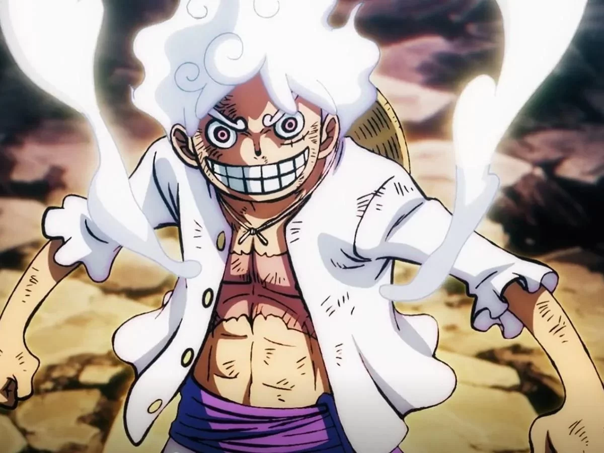
Monkey D. Luffy
-

Roronoa Zoro
-
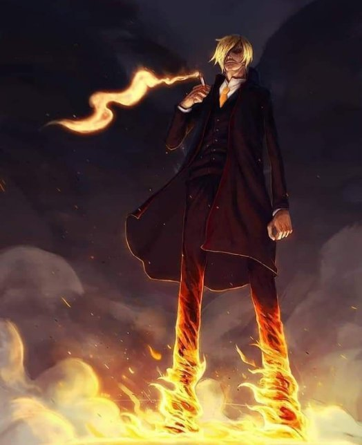
Kuroashi Sanji
-
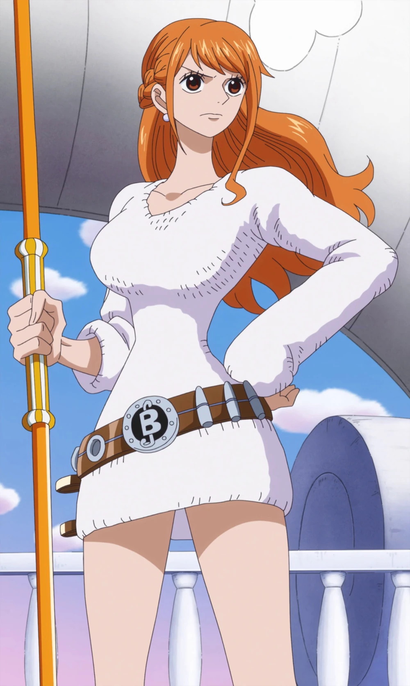
Namy
-
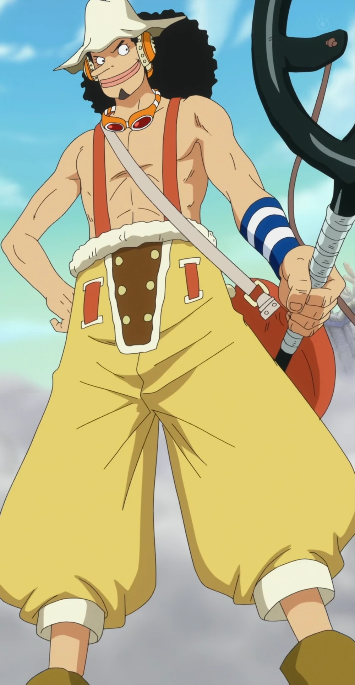
Ussop
-
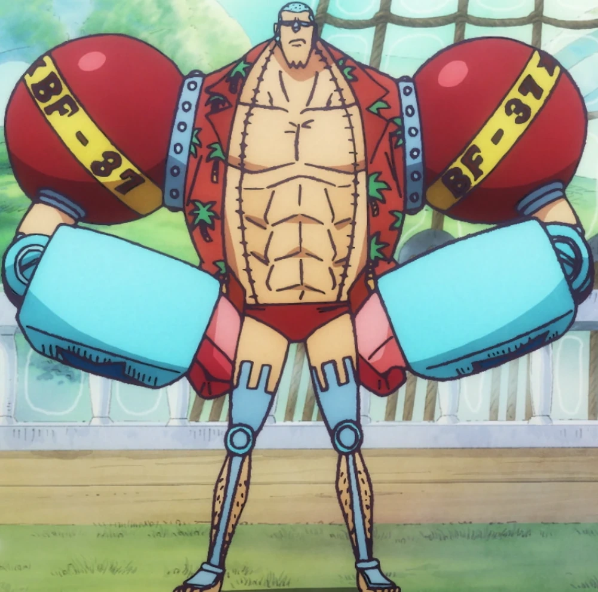
Franky
-
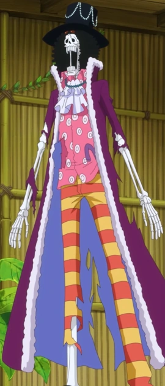
Brook "Soul King"
-
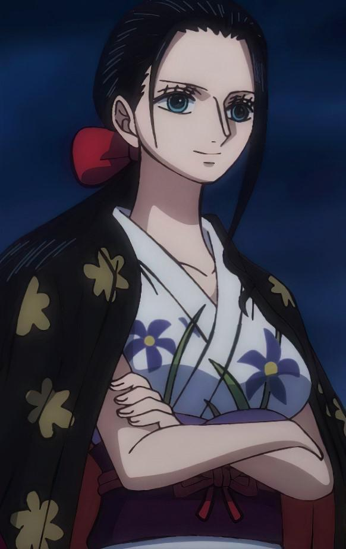
Nico Robin " Niña Demonio"
-
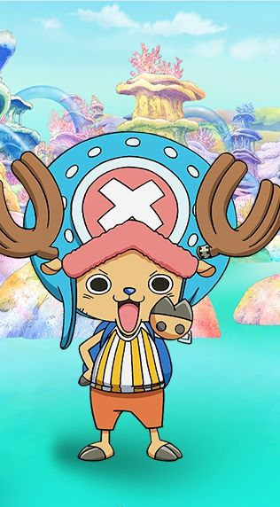
Tony Tony Chopper
-
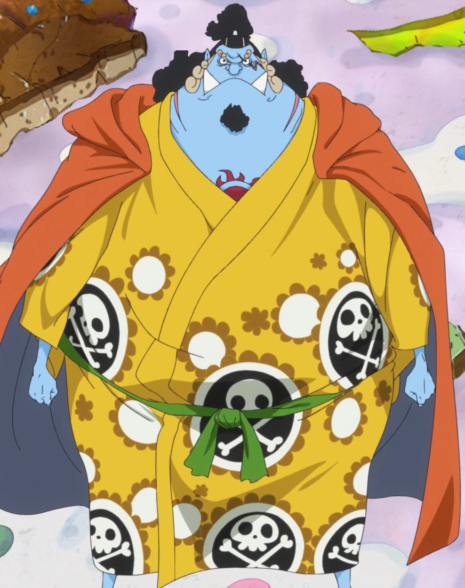
Jinbe el Caballero del Mar
Wallpapers


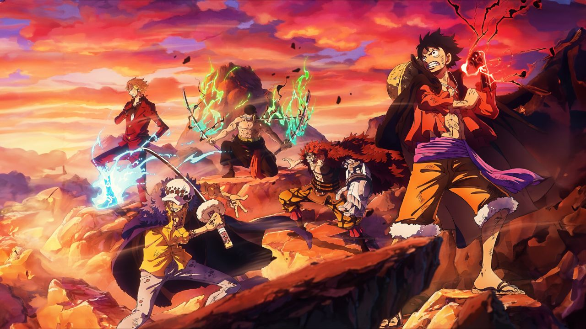
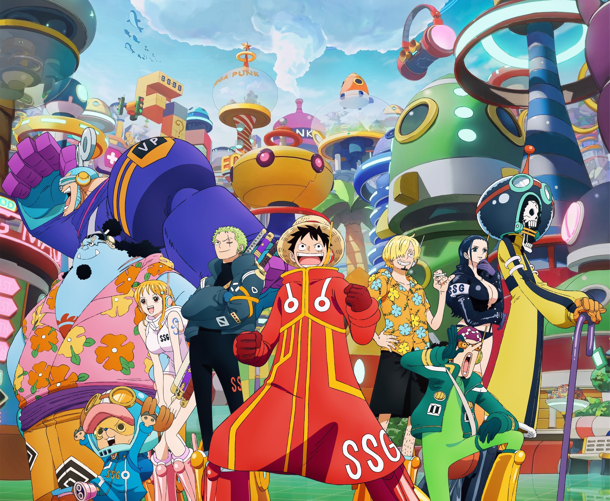